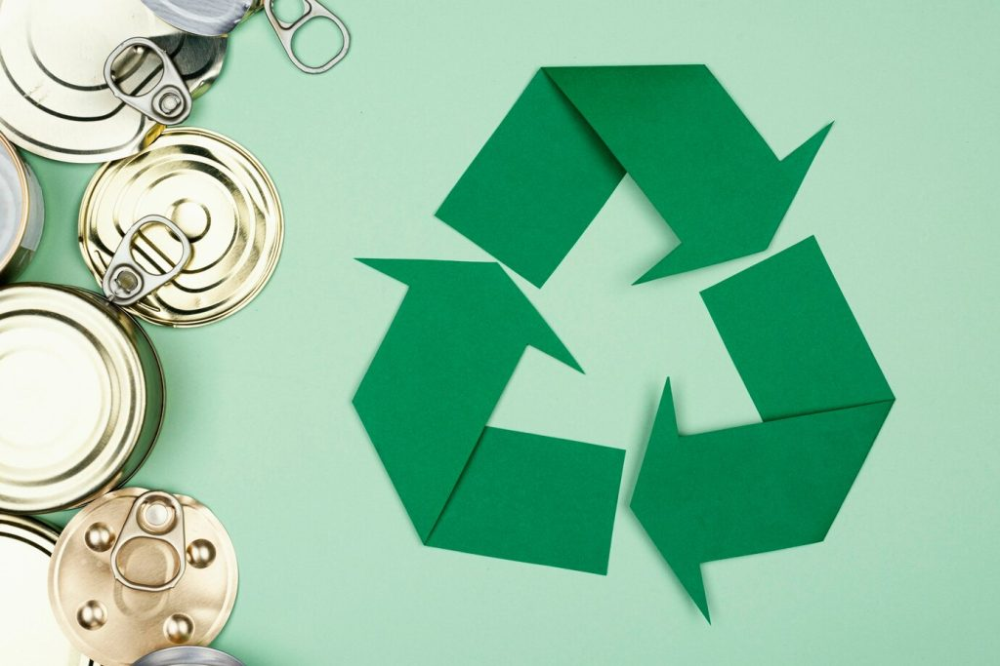
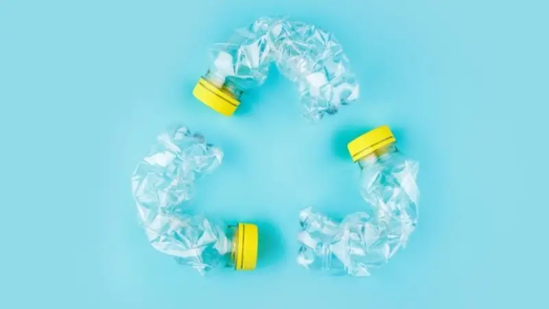
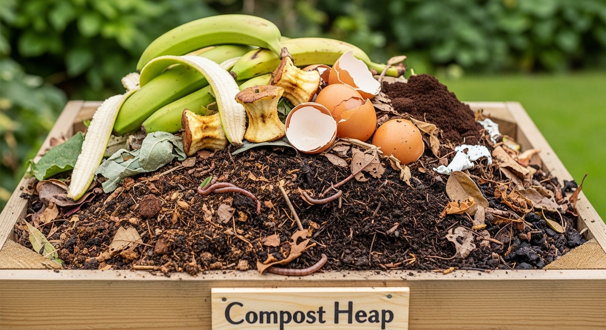
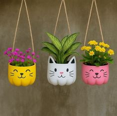
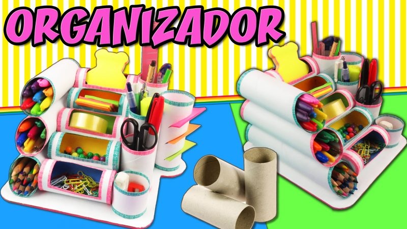
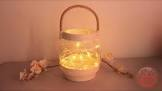
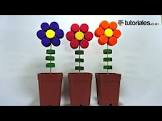

Descubre cómo pequeñas acciones diarias pueden transformar nuestro entorno. Fomentamos la conciencia ambiental, el manejo responsable de residuos y la cultura del reciclaje para proteger nuestro planeta y nuestra comunidad.
Ver Consejos 🌿Acciones sencillas que puedes aplicar en casa y en el colegio para proteger la naturaleza:
Conoce cómo se clasifican y procesan los materiales para darles una nueva vida:
Grandes cantidades de papel y cartón usado se ponen en remojo para obtener pulpa de celulosa, con la cual se fabrica nuevo material reutilizable.

Productos de aluminio, cobre y otros metales cotidianos se funden y se aprovechan al máximo para elaborar nuevos productos industriales o caseros.

Botellas y envases plásticos se recolectan, higienizan y transforman cuidadosamente para fabricar nuevos contenedores o fibras textiles.

Los residuos orgánicos, como cáscaras de frutas, verduras y restos de comida, se convierten en abono nutritivo para enriquecer la tierra y las plantas.
Ideas prácticas para transformar lo viejo en piezas útiles y creativas:

Materiales: Botellas plásticas, pinturas acrílicas, pinceles y marcadores.
Indicaciones para armar:

Materiales: Rollos de papel higiénico, cartón base, lanas y pegamento.
Indicaciones para armar:

Materiales: Frasco de vidrio limpio, papel de colores translúcidos y pegamento.
Indicaciones para armar:

Materiales: Tapitas plásticas, botellas descartables, alambre y silicona.
Indicaciones para armar: